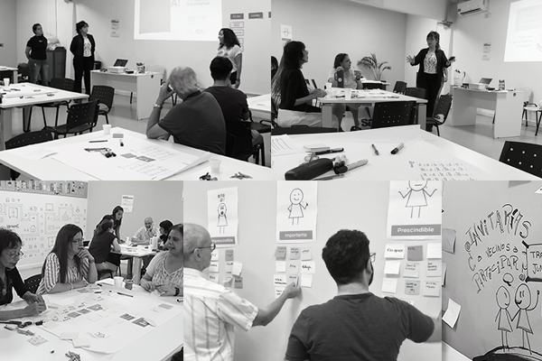

Developed the "Citizen Folder" (Carpeta Ciudadana) concept, fully grounded in verified user needs rather than technical assumptions.
← Back to work
Selected Work · Emerging Tech · Workshop Facilitation
Workshop facilitation for alignment, reflection & public trust
Civic Tech & Blockchain:Translating emerging technologies into tangible value propositions for citizen participation.
